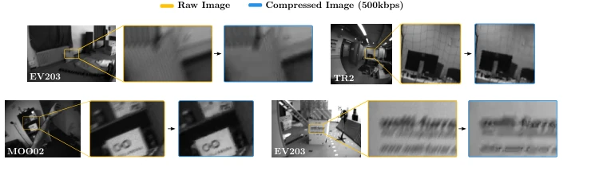
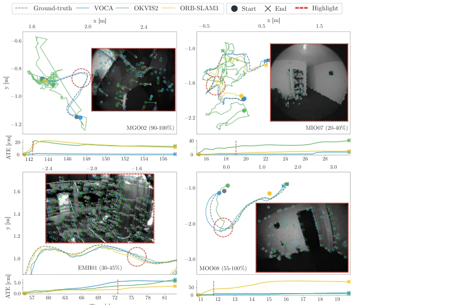
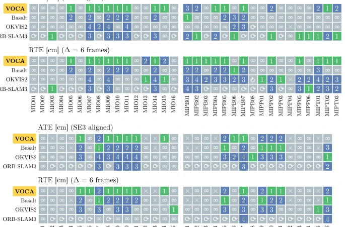
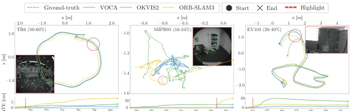
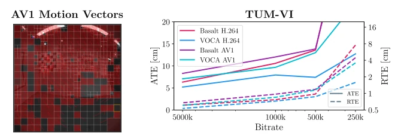

Nouri Alexander Hilscher, Mateo de Mayo, Dominik Muhle, Christoph Otten genannt Hermes, Daniel Cremers abspdf
论文点评Review
这篇论文算是给视觉里程计（VO）开了个“后门”。作者发现压缩视频里的运动矢量（Motion Vectors）其实藏着光流信息，直接拿来初始化 KLT 跟踪，效果出奇的好。虽然这招在 H.264 上很灵，但本质上还是“捡漏”，毕竟编码器为了压缩效率牺牲了运动精度，且主要依赖 Basalt 框架，换个架构可能就不灵了。最讽刺的是，大家为了省带宽把视频压得面目全非，结果还得靠解码器吐出来的“残羹冷炙”来恢复精度。不过，能在 100 倍压缩下还能跑稳，确实比那些只会吃 raw 数据的 SLAM 系统强，至少省了存储钱。对于依赖大量互联网视频数据进行预训练的研究者来说，这算是一个实用的工程优化，但理论深度上略显保守，毕竟只是利用了现有解码器的副产品。
This paper essentially opens a "backdoor" for Visual Odometry (VO). The authors find that motion vectors (Motion Vectors) within compressed video actually contain optical flow information, and using them directly to initialize KLT tracking yields surprisingly good results. Although this approach works well on H.264, it is essentially "picking up scraps", as encoders sacrifice motion accuracy for compression efficiency, and it relies primarily on the Basalt framework, so it may not work with a different architecture. The most ironic aspect is that videos are compressed beyond recognition to save bandwidth, yet accuracy must still be recovered from the "leftovers" produced by the decoder. However, maintaining stability under 100x compression is indeed superior to SLAM systems that only consume raw data, at least saving on storage costs. For researchers relying on large-scale internet video data for pre-training, this represents a practical engineering optimization, though it is somewhat conservative in theoretical depth, as it merely leverages byproducts of existing decoders.
研究动机Motivation
现实世界中，摄像头数据量巨大，存储和传输成本高昂，导致系统普遍采用“先压缩后分析”范式。然而，有损压缩引入的视觉伪影（如模糊、块效应）严重破坏了传统 VO 系统依赖的光度恒常性假设。现有工作如 MoV-SLAM [62] 虽尝试利用编码信息，但覆盖面有限。大多数主流系统（如 ORB-SLAM3 [7]、OKVIS2 [32]）仍假设输入为原始图像，一旦面对高压缩比视频，跟踪性能便急剧下降。这导致大量互联网视频数据无法被有效利用于下游视觉任务。
In the real world, camera data volume is enormous, and storage and transmission costs are high, leading systems to generally adopt the "compress-then-analyze" paradigm. However, visual artifacts introduced by lossy compression (such as blur and blocking effects) severely disrupt the photometric constancy assumption relied upon by traditional VO systems. Existing work such as MoV-SLAM [62] attempts to leverage encoding information, but its coverage is limited. Most mainstream systems (such as ORB-SLAM3 [7], OKVIS2 [32]) still assume the input consists of raw images; once facing videos with high compression ratios, tracking performance drops sharply. This results in a vast amount of internet video data remaining ineffective for downstream visual tasks.

Fig. 2: Video encoding can introduce artifacts that violate the photometric-constancy assumption used by most tracking algorithms. Examples from datasets used in this work: EV203 (from EuRoC [6]) shows blurred details, TR2 (from TUM-VI room [54]) exhibits reduced contrast in the thin net, and MOO02 (from MSD [39]) contains geo- metrically jagged edges/textures. See [35] for additional artifacts.
VOCA is constructed based on Basalt [64], with the core innovation being the utilization of motion vectors (MV) within video codecs as initial priors for KLT tracking. First, although MV represents block-level translation and is optimized for compression rate, it exhibits correlation with true optical flow; it can serve as initialization for the translation component in the SE(2) model, significantly narrowing the search range and reducing convergence distance. Second, to address the issue of I-frames lacking MV, the system reuses the MV from the preceding P-frame, assuming constant motion, thereby maintaining initialization continuity and preventing tracking loss. Furthermore, to handle outliers potentially introduced by MV (such as dynamic objects or texture-repetitive regions), a dual-mode parallel tracking strategy is proposed: running tracking with and without MV priors separately, retaining only consistent results to filter erroneous matches. Finally, by relaxing forward-backward consistency thresholds and expanding patch regions, robustness to compression noise is enhanced, ensuring stable relative trajectory error can be maintained even at low bitrates.

Fig. 5: Qualitative trajectory examples. To showcase the quality of VOCA trajec- tories, in addition to Fig. 1, we provide segments covering more devices and scenarios. We highlight specific frames with dashed red outlines. Inside each frame, we draw the optical-flow solutions, if any, the feature location in the previous frame used by standard optical-flow-based feature trackers, and the motion-vector prior extracted from the H.264 decoder used by VOCA. As can be seen in the images, our prior is closer to the solution in almost all cases, even for large displacements such as those seen in MGO02 (from MSD).

Fig. 6: MSD overview. We indicate divergences and resets with gray ∞and ⟳, respectively. First-place ranks for each sequence are shown in green, and non-first ranks are shown in blue. See the supplementary for the detailed numbers of each run.
Evaluated on three datasets: EuRoC [6], TUM-VI [54], and MSD [39], with compression rates reaching up to 100x. Baselines include ORB-SLAM3 [7], OKVIS2 [32], Basalt [64], and MoV-SLAM [62]. Metrics include ATE and RTE. Results show that VOCA significantly outperforms Basalt on compressed video (RTE improved by approximately 15%), and median ATE improved by 37% on the MSD dataset. Ablation studies indicate that the parallel tracking strategy (MV || OF) combined with I-frame bridging yields the best performance. As bitrate decreases, VOCA performance remains stable, whereas systems like OKVIS2 collapse rapidly, demonstrating its capability to resist compression artifacts. Especially in dynamic scenarios such as MSD, VOCA's success rate increased by 13 percentage points, exhibiting extremely strong robustness.

Fig. 1: Visual Odometry on Compressed Videos. We present VOCA, a novel Visual Odometry system that produces smoother, more stable trajectories than descriptor-based systems such as ORB-SLAM3 and OKVIS2, thanks to its codec-aware sparse optical-flow frontend. Our system enables Visual Odometry on data compressed by up to 100×. We visualize challenging segments with dashed-red markers, sampled from three different datasets. In the zoomed-in views, we show the previous pixel location that would be the prior in regular VO systems, the motion-vector prior that we introduce, and the optical flow solution. In most cases, motion-vector priors reduce the initialization distance to the solution to just a few pixels.

Fig. 8: H.264 and AV1 motion-vector priors on TUM-VI Room. We show an example of decoded AV1 motion vectors and median ATE/RTE across bitrates on the TUM-VI Room sequences. Within this KLT-based setup, VOCA improves the corresponding baseline for both H.264 and AV1 priors on this dataset.